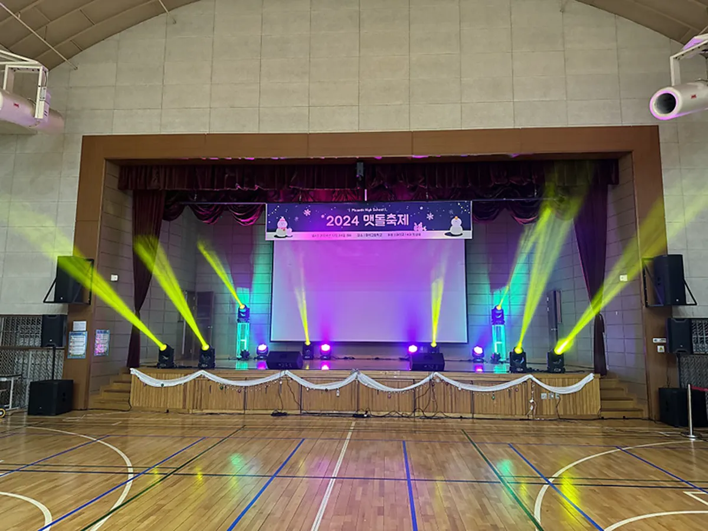
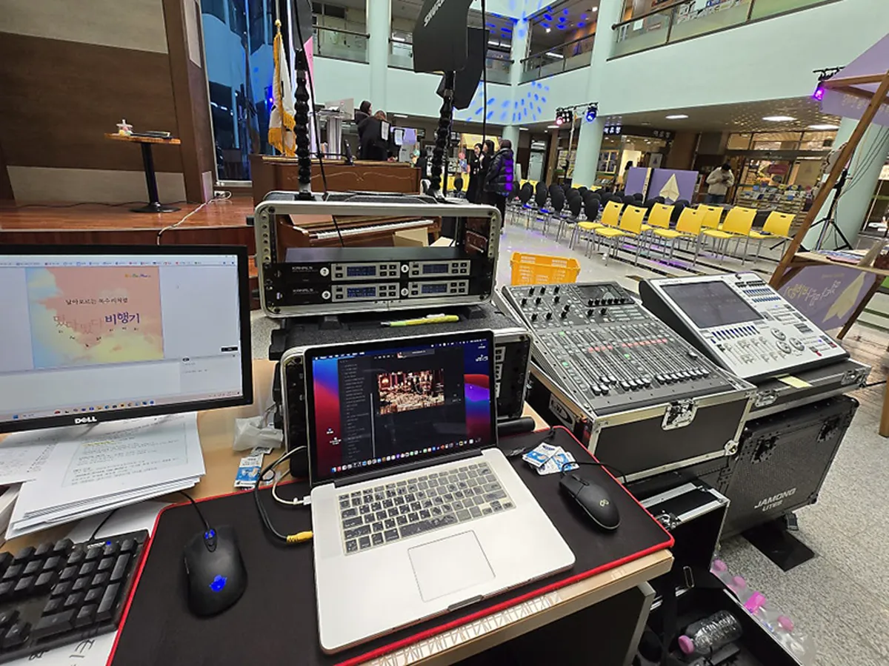
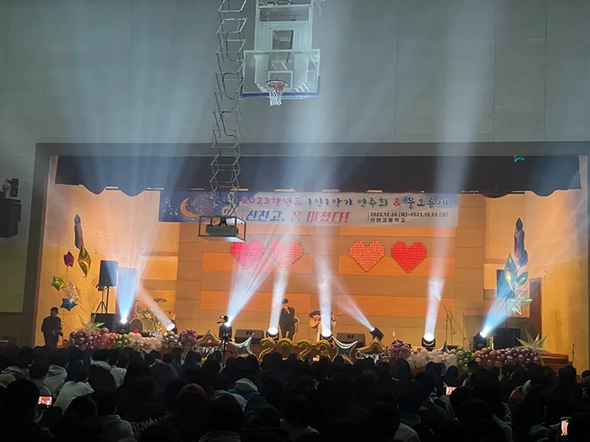

성북 음향 조명 대여를 알아볼 때는 장비 이름보다 공간의 크기 · 행사 순서 · 전원 세 가지를 먼저 알려 주시는 것이 가장 빠릅니다. 같은 강당이라도 발표만 하는지, 밴드 공연이 있는지에 따라 필요한 장비가 크게 다릅니다. 프로이벤트는 음향 · 조명 · 무대 · LED 를 외주에 맡기지 않고 자체 장비와 자체 인력으로 세팅하며, 행사 없이 장비만 필요한 경우도 상담합니다. 서울 본사에서 성북구청까지는 차로 약 10분 · 11.0km 입니다.

- 음향은 공간 크기와 순서(발표 · 공연 · 레크리에이션)를 보고 소형 · 중형 · 대형으로 고릅니다.
- 무선 마이크는 동시에 쓰는 개수에 예비 하나를 더해 셉니다.
- 조명은 공간 자체 조명을 끌 수 있는지부터 확인해야 효과가 납니다.
- 장비를 빌릴 때 운영 인력(오퍼레이터)까지 함께 정해야 당일 소리와 조명이 안정됩니다.
1. 성북 음향 조명 대여, 먼저 알려 주실 세 가지
음향 · 조명 문의를 받으면 가장 먼저 묻는 것은 장비가 아니라 행사 정보입니다. 아래 세 가지만 정리해 주셔도 필요한 구성을 바로 제안할 수 있습니다.
| 알려 주실 것 | 왜 필요한가 | 예시 |
|---|---|---|
| 공간 | 스피커 크기 · 위치가 달라짐 | 학교 강당, 구민회관 공연장, 운동장, 광장 |
| 순서 | 마이크 수 · 조명 연출이 달라짐 | 발표 · 시상 · 밴드 공연 · 댄스 · 레크리에이션 |
| 전원 | 장비를 얼마나 쓸 수 있는지 결정 | 실내 콘센트 위치, 야외 전원 유무 |
성북(성북동 · 길음동 · 돈암동 · 정릉동 · 안암동 · 석관동 · 성북구청 등)의 학교 · 회관 행사라면 공간 사진 몇 장과 무대 쪽 콘센트 위치만 보내 주셔도 1차 구성을 잡을 수 있습니다. 프로이벤트 홈페이지 고객 목록(TRUSTED BY)에 성북구가 올라 있습니다.
2. 공간별 음향 규모 고르기
자동 견적서의 음향 항목은 소형 · 중형 · 대형으로 나뉩니다. 공간 크기만으로 정하지 말고, 순서에 공연이 있는지를 함께 봅니다. 발표 위주의 행사는 한 단계 작게, 밴드 · 댄스 공연이 있으면 한 단계 크게 잡는 것이 무난합니다.
| 규모 | 잘 맞는 공간 · 순서 | 주요 구성 |
|---|---|---|
| 음향 (소형) | 세미나실 · 작은 강당, 발표 · 진행 위주 | 스피커 · 소형 콘솔 · 무선 마이크 |
| 음향 (중형) | 강당 · 연회장, 시상 · 레크리에이션 · 작은 공연 | 스피커 · 디지털 콘솔 · 모니터 |
| 음향 (대형) | 운동장 · 광장 · 큰 공연장, 밴드 공연 | 라인어레이 스피커 · 디지털 콘솔 · 모니터 |

3. 무선 마이크와 조명 고르기
무선 마이크는 「동시에 쓰는 개수 + 예비 하나」로 셉니다. 진행자 한 개, 발표자 한 개, 시상자 한 개처럼 순서표를 보며 같은 시간에 손에 들려 있는 마이크를 세면 됩니다. 노래 순서가 있으면 노래용 마이크를 따로 둡니다.
- 무빙라이트: 공연 · 시상 순간에 움직이는 빔으로 분위기를 바꿉니다.
- 빔 · 워시: 무대 전체를 고르게 밝히거나 색을 입힙니다. 사진이 잘 나오려면 워시가 기본입니다.
- 특수효과 · 포그 · 컨페티: 오프닝이나 마지막 순서에만 짧게. 공간 사용 허가를 먼저 확인합니다.
- LED 전광판: 영상 · 순서표 · 자막. 화면 비율과 영상 파일 형식을 미리 맞춥니다.
4. 전원과 반입을 확인합니다
장비가 많아질수록 전원이 문제입니다. 무대 쪽 콘센트가 하나뿐인 강당에 음향과 조명을 모두 꽂으면 차단기가 내려갈 수 있습니다. 시설 담당자에게 무대 쪽 전원 위치와 용량, 차단기 위치를 물어 두세요. 야외라면 전원을 어디서 끌어올지가 장비 구성보다 먼저입니다.
| 확인할 것 | 물어볼 곳 |
|---|---|
| 무대 쪽 콘센트 위치 · 수 | 시설 담당자 |
| 전원 용량 · 차단기 위치 | 시설 담당자 · 전기 담당 |
| 장비 반입 시간 · 엘리베이터 | 시설 담당자 |
| 소음 제한 시간 | 시설 담당자 · 관리 규정 |
5. 장비만 빌릴 때도 운영 인력을 정합니다
장비만 놓고 가면 당일 하울링이나 음량 문제를 현장에서 잡을 사람이 없습니다. 프로이벤트는 장비를 세팅한 인력이 그대로 운영까지 맡는 것을 기본으로 상담합니다. 순서표를 미리 받아 음악 · 마이크 · 조명 신호를 맞추고, 리허설 때 진행자와 함께 확인합니다.

- 행사 일주일 전: 순서표 · 공연 음원 · 영상 파일 받기.
- 사흘 전: 마이크 수 · 조명 신호 확정.
- 당일: 반입 → 세팅 → 소리 · 조명 점검 → 리허설 → 운영 → 철수.
6. 음향 · 조명 견적 항목표
자동 견적서에서 필요한 장비를 골라 보내 주시면 담당자가 확인 후 1영업일 안에 1차 제안과 견적으로 답합니다. 금액은 공간 · 장비 규모 · 운영 시간에 따라 달라 상담 때 안내합니다.
| 항목 | 확인할 것 |
|---|---|
| 음향 (소형) · (중형) · (대형) | 공간 크기 · 공연 유무 |
| 무선 마이크 추가 | 동시에 쓰는 개수 |
| 조명 | 공연 · 시상 연출 |
| 무대 | 높이 · 크기 · 계단 |
| LED 전광판 | 화면 크기 · 영상 형식 |
| 특수효과 | 공간 사용 허가 |
| 운반 · 설치 인건비 | 반입 · 철수 시간 |
성북 지역 안내는 성북 행사 안내에 있습니다. 강당 기념 행사의 음향 · 조명 구성은 춘천 기념식 행사 글도 참고하세요.
자주 묻는 질문
행사 진행 없이 장비만 빌릴 수 있나요?
장비만 필요한 경우도 상담합니다. 다만 당일 소리와 조명을 맞출 운영 인력을 함께 두는 것을 권합니다.
학교 강당 행사도 되나요?
학교행사는 프로이벤트 사업분야입니다. 강당 크기와 공연 순서를 알려 주시면 음향 규모를 맞춰 제안합니다.
야외에서 전원이 없으면 어떻게 하나요?
전원을 어디서 끌어올 수 있는지부터 시설 측과 확인해야 합니다. 행사장 정보를 주시면 함께 검토합니다.